농업 및 어업 중심의 사회가 공업 중심 사회로 변화하는 현상
= 산업 구조가 1차 산업 중심에서 2·3차 산업 중심으로 변화하는 현상
도시화율이 높아지거나 도시적 생활 양식이 확대되는 현상
도시화율 = 전체 인구 중 도시에 거주하는 인구의 비율
| 구분 | 정의 | 예시 |
|---|---|---|
| 1차 산업 | 자연에서 자원을 직접 얻는 산업 | 농업, 임업, 어업, 축산업 |
| 2차 산업 | 원료를 가공하여 제품을 생산하는 산업 기계·자본 집약적 | 공업(경공업·중공업), 제조업, 건설업 |
| 3차 산업 | 재화 생산을 지원하거나 서비스를 제공하는 산업 | 상업, 운수·통신, 관광 |
| 고차 서비스업 | 3차 산업 중 전문성·지식이 요구되는 산업 (고도화·확장) | 금융·보험, 교육, 의료, 연구개발(R&D), IT, 전문 서비스(법률·회계) |
촌락의 인구가 일자리와 더 나은 생활을 찾아 도시로 이동하는 현상. 산업화에 따라 발생하며 도시화를 가속화한다.
▲ 우리나라의 산업 구조 변화 (1970~2022)
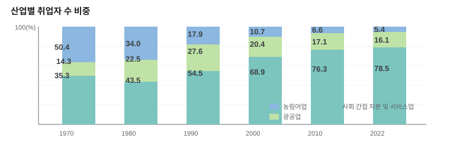
1차 산업 중심의 농업 사회. 도시화율 낮고 변화 느림.
이촌향도로 급속한 도시 인구 증가. 각종 도시 문제 발생.
도시화율 증가 둔화. 교외화 및 대도시권 확대.
▲ 도시화 곡선 (S자형)
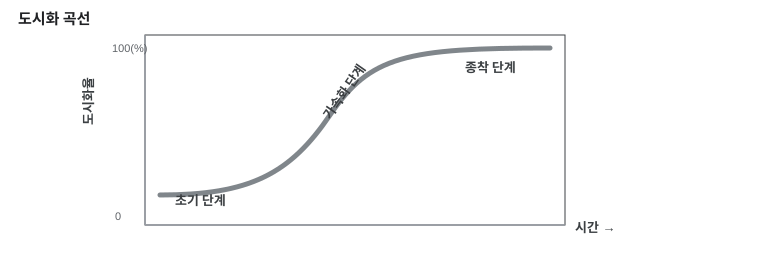
| 구분 | 도시화 시작 | 현재 단계 | 특징 |
|---|---|---|---|
| 선진국 | 산업 혁명 이후 점진적으로 진행 | 종착 단계 | 도시화율 증가 둔화, 교외화 현상 |
| 개발도상국 | 제2차 세계 대전 이후 급속히 진행 | 가속화 단계 | 주택 부족, 기반 시설 부족, 환경 오염 등 도시 문제 발생 |
▲ 우리나라의 도시화율 (1960~2022)
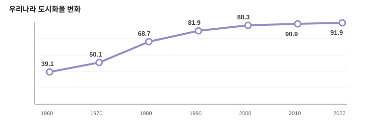
▲ 지역(대륙)별 도시화율 변화 (1950~2020)
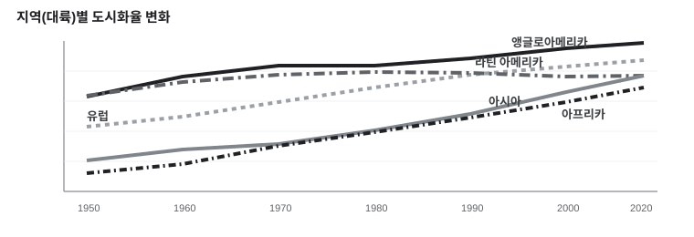
| 시기 | 주요 내용 |
|---|---|
| 과거 | 조선시대 한양을 중심으로 각 지방 행정 중심지 발달 |
| 1960년대 | 경제 개발 정책에 따른 산업화와 이촌향도 현상 → 서울·부산 등 대도시에 인구 집중 |
| 1970년대 | 도시 인구 > 촌락 인구 / 광주·대전 등 지방 대도시 성장 / 수출 위주 공업화 정책 → 남동 임해 공업 지역 발달 → 포항·울산·창원 등 공업 도시 발달 (도시화율 50% 이상) |
| 1980년대 | 대도시 과밀 → 수도권 주변 지역으로 인구·기능 분산 → 교외화 현상 나타남 |
| 1990년대 | 1기 신도시(분당·일산·평촌·산본·중동) 건설 → 대도시 인구 분산 (교통 발달 전제) |
| 2000년대 | 2기 신도시(판교·동탄·광교·김포한강·위례 등) 건설 → 주택 공급 확대·자족 기능 강화 → 교외화 지속 |
| 2010년대 후반~ | 3기 신도시(남양주 왕숙·하남 교산·인천 계양 등) 건설 → 수도권 주택 공급 확대·서울 접근성 개선 |
| 최근 | 역도시화: 대도시 인구 → 중소도시·농촌 이동 (주거환경·삶의 질·원격근무 등) / 재도시화: 구도심 재개발·재생 → 도심 회귀 |
▲ 대도시로의 인구 집중
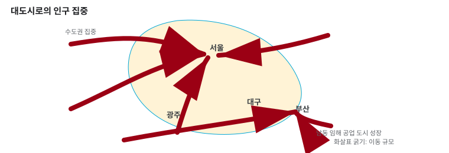
▲ 3기 신도시 조성계획 및 수도권 인구밀도
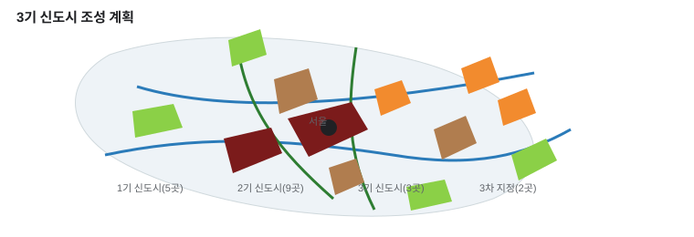
| 변화 | 내용 |
|---|---|
| 도시 규모 확대 | 제조업·서비스업 발달로 도시 기능 강화 → 시가지 면적 확대, 농경지가 주거·상업·업무 지역으로 변화 |
| 도시 내부의 지역 분화 | 도시 규모 확대·교통 발달로 기능별 지역 분화 / 접근성과 지가 차이에 따라 중심 업무·상업·주거·공업 지역으로 구분 |
| 토지 이용의 집약화 | 아파트·연립주택 등 공동주택 등가 (고층·지하) → 집약적 토지 이용 / 고층 건물 증가 및 도시 공간의 수직적 확대, 상업·업무 기능이 도심에 집중 |
| 도시의 범위 확대와 교외화 | 교통 발달로 주거지·직장 거리 증가 / 도시 인구·기능이 주변 지역으로 분산되는 교외화 현상 |
| 대도시권 형성 | 중심 도시와 주변 지역이 기능적으로 밀접하게 연결되는 대도시권 형성 → 통근·통학권 확대 |
| 생태 환경의 변화 | 하천 직강화·복개 등 인위적 개발 증가 / 도시 내 포장 면적 확대로 녹지 공간 감소, 도시 생태 환경 악화 |
▲ 도시 내부의 지역 분화 모식도
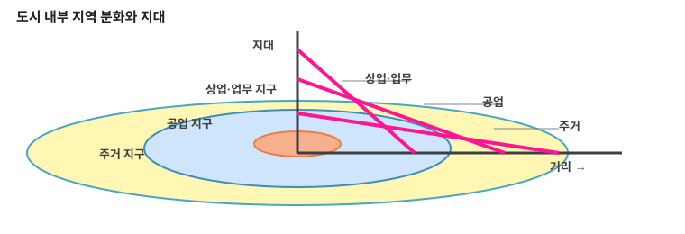
| 지역 | 특징 | 대표 지역 |
|---|---|---|
| 도심 CBD | 상업·금융 관리 기능, 기업 본사 집중 / 주간 유동인구 多, 상주인구 少 → 인구 공동화 현상 | 중구, 종로구 |
| 공업 지역 | 과거 대표 공업 지역 → 현재 첨단 산업·업무 지역으로 변화 | 구로구, 금천구 (구로 공단 일대) |
| 외곽 지역 | 상주인구·학교 수 多, 주거 기능 집중 | 노원구, 도봉구, 은평구, 강동구, 강서구 |
| 부도심 | 도심 기능 분산, 상업 기능 밀집 / 교통 편리한 지역 중심 성장 | 영등포구(여의도), 강남구, 송파구(잠실) |
▲ 서울 내부의 지역 분화 (인구밀도, 2016)
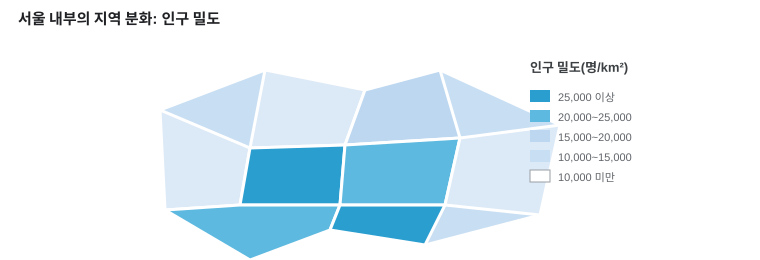
▲ 인구 공동화 현상 그래프 및 집심·이심 모식도
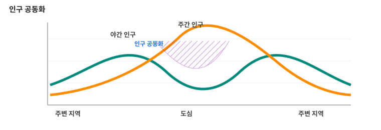
도시의 인구·산업·기능 등이 중심부로 집중되는 현상
도시의 인구·기능 등이 중심부에서 주변 지역으로 분산되는 현상
▲ 집심 현상과 이심 현상
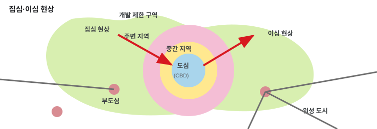
| 구분 | 개념 |
|---|---|
| 위성도시 | 대도시의 기능을 분담하기 위해 외곽 지역에 형성된 도시. 기능적으로 대도시와 밀접하게 연결. |
| 신도시 | 수도권 인구를 분산하기 위해 계획적으로 조성한 도시. 주거 기능 외 상업·업무 기능 등 자족적 기능을 갖추는 것을 목표. |
| 근교 농촌 지역 (배후 농촌 지역) |
대도시 주변, 도시·농촌 경관·생활 양식이 함께 나타남. 주로 1차 산업으로 생계 유지. 신선도 중요한 채소·원예 작물 재배, 낙농업. |
▲ 교외화 현상과 대도시권 형성 모식도
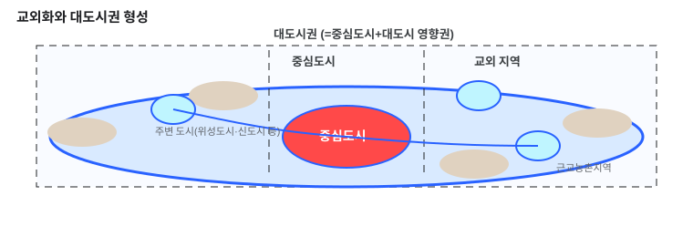
▲ 우리나라 국토 용도별 이용 면적 변화 (1977→2022)
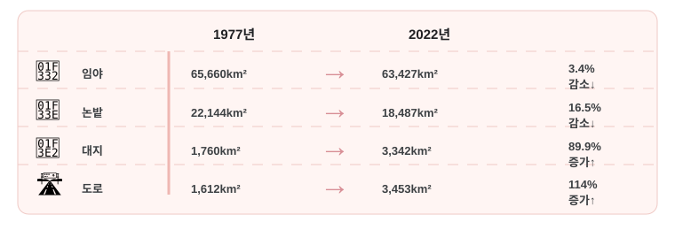
| 변화 | 내용 |
|---|---|
| 생활 수준의 향상 | 대량 생산·대량 소비 가능, 소득 증대 및 생활 수준 향상 / 기계화·자동화로 근로자의 노동 시간 단축 및 여가 시간 증가 |
| 도시적 생활 양식의 확대 5신성 확산 | 교통 시설, 다양한 상업 시설, 여가·문화 시설 발달 = 편의점, 대형 마트, 복합 쇼핑몰, 백화점 등 |
| 직업의 분화 | 2·3차 산업의 발달로 직업 분화·전문화 → 삶의 다양화로 이질성 증대, 직업 간 소득 차이 |
| 개인주의 가치관 확산 | 핵가족 및 1인 가구의 비중 증가 / 이웃 간 유대 관계 낮음, 공동체보다 개인의 자유와 권리 중시 |
▲ 우리나라 1인 가구 비율 변화
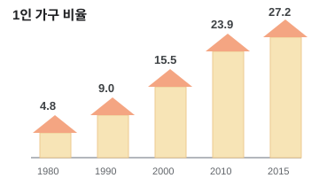
▲ 편의점 수의 증가
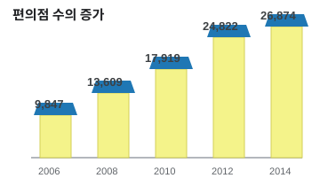
▲ 열섬 현상 (서울 최저 기온 분포)
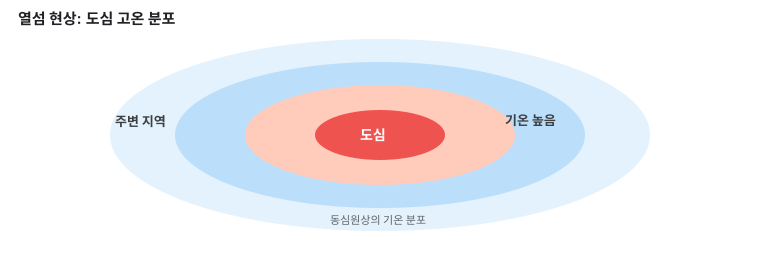
▲ 도시화에 따른 지표 환경의 변화 (하천 수위 변화)
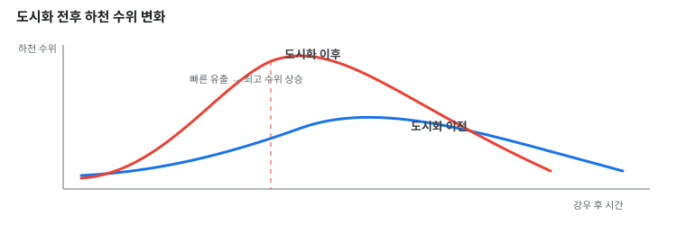
| 차원 | 문제 | 해결 방안 |
|---|---|---|
| 사회적 차원 | 환경 문제 | 환경과 조화를 이루는 도시 개발 계획 수립 |
| 주택 문제 | 대도시 주변에 신도시 건설, 도시 재개발 사업 추진 | |
| 교통 문제 | 거주자 우선 주차 제도 정착, 공영 주차장 확대, 대중교통 수단 확충 | |
| 사회 문제 | 소외 계층을 위한 사회 복지 제도 확대, 범죄 예방 정책 마련 | |
| 개인적 차원 | 환경 문제 | 쓰레기 분리수거, 대중교통 이용 실천 |
| 사회 문제 | 인간 존엄성 중시·타인 존중 자세 확립, 지나친 개인주의적 태도 지양, 공동체 구성원과의 연대 의식 함양 |
▲ 우리나라 혁신 도시의 위치와 특화 분야
| 산업혁명 | 시기 | 특징 |
|---|---|---|
| 제1차 | 18세기 | 증기 기관 기반의 기계화 혁명 |
| 제2차 | 19~20세기 | 전기 에너지 기반의 대량 생산 혁명 |
| 제3차 | 20세기 후반 | 컴퓨터·인터넷 기반의 지식 정보 혁명 |
| 제4차 | 21세기 초반~ | AI·IoT·빅데이터·클라우드 → 지능 정보 기술 융합 |
▲ 제4차 산업 혁명 개념도
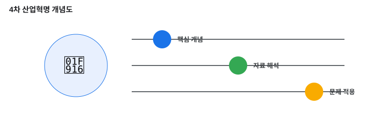
▲ 교통 발달에 따른 지구의 상대적 크기 변화 및 수도권 통근 네트워크 변화
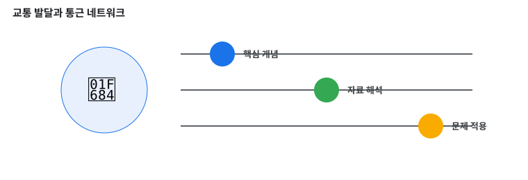
| 변화 | 내용 |
|---|---|
| 일상생활 범위의 확대 | 접근성 향상: 통근·쇼핑 등 일상생활 범위 확대 / 교외화: 주거지·공장 등 교외로 이전 / 대도시권 형성: 광역 교통망 발달 → 대도시 기능·영향력이 주변 도시로 확대 (예: 2018 고속철도 강릉선, 2009 서울-춘천 고속국도) |
| 경제활동 범위의 확대 | 상품·노동력이 국가 넘나들며 이동 / 시공간 제약 감소: 인터넷·스마트폰 → 언제 어디서나 전자상거래·금융 거래 / 공간적 분업: 다국적 기업 각 기능이 공간적으로 분리 (본사·연구소: 선진국 / 생산 공장: 개발도상국) / 초국적 기업: 본사 또는 핵심 기능까지 해외로 이전 |
| 여가 공간의 확대 | 국내외 여행 증가 / 대중 매체 통한 세계 여러 지역과의 상호작용, 다양한 문화 경험 |
| 생태환경 변화 | 도로망·통신 시설 건설 → 생태계 파괴, 동식물 서식 환경 악화 / 생태계 보호에도 활용: GPS, GIS 활용한 멸종위기동물 관리·보호, 드론·헬리콥터로 생태환경 유지 |
| 변화 | 내용 |
|---|---|
| 근무 환경의 변화 | 원격 근무, 출퇴근 시간 감소 / 유연한 근무 환경(재택 오피스, 선택적 시간 근무, 부분 주4일제) / 워케이션: 원하는 곳에서 업무·휴가 동시에 하는 새로운 근무 제도 |
| 생활 편리성 증대 | 로봇, 인공지능, 사물인터넷, 빅데이터 |
| 다양한 인간관계 형성 | 대면 접촉 중요성 약화, 가상공간 교류 확대 |
| 정치 참여 기회 확대 | 개인 방송·SNS 통한 홍보·정치적 의견 표출 → 직접 민주주의 실현 가능성↑ (전자 민주주의) |
원인: 접근성 높은 지역 발전 ↔ 낮은 지역 쇠퇴 → 지역 격차
빨대 효과: 새로운 교통수단 개통으로 주변 도시의 인구·경제력이 대도시로 유입되는 현상 (역류 효과 중 교통수단 발전이 선제)
해결: 낙후 지역 교통망 확충, 공공기관 이전(혁신 도시), 산업단지 조성 → 생활 여건 개선 + 지역 균형 발전
원인: 교통 발달로 전염병 급속히 전파
해결: 세계 각국 국제 사회 연대 강화(정보 공유·공동 연구·경보 체계) / 공항·항만 상시 방역 강화 / 개인 위생 관리
원인: 외래종의 토종 동식물 생태계 위협 (선박 평형수를 통한 유입) / 화석연료로 인한 환경오염
해결: 생태교란종 국제 이동 통제, 조기 발견, 친환경 대체 연료 개발
원인: 디지털 소외 계층, 경제적·사회적 격차로 더욱 확대
해결: 접근성 높이는 기술 개발·제품 제공, 정보 격차 해소 교육 / 예: 배리어 프리 키오스크
원인: 단순 생산·사무직·관리직 일자리 감소 / 과학·수학·정보통신기술 분야 증가 / 실업↑, 빈부격차 확대
해결: 미래 필요 노동력 양성, 기존 노동력 재취업 직업 훈련 / 사회 보장 시스템 개편, 창의적 인재 육성
한 지역에 수용 가능한 적정 수준의 관광객 수를 넘는 관광객이 유입하여 발생하는 문제
해결: 지역 — 관광객 수 제한, 입장료 부과 / 개인 — 공정 여행 노력
▲ 지역 격차 관련 자료 (강릉선 KTX + 정보화 지수)
▲ 혁신도시와 이전 공공기관
특정한 지리적 특징이 공통적으로 나타나는 공간 범위
자연환경·문화·산업 등 공통된 특징 기준으로 구분. 지역 내부 성격이 비교적 유사.
예) 기후 지역, 문화권
중심지와 그 영향을 받는 배후지로 이루어진 공간 범위
사람·물자·정보의 이동 등 중심지와의 기능적 연결을 기준으로 형성.
예) 상권, 통근·통학권, 대도시권
*배후지: 중심지의 영향을 받는 주변 지역
▲ 등질지역과 기능지역 비교
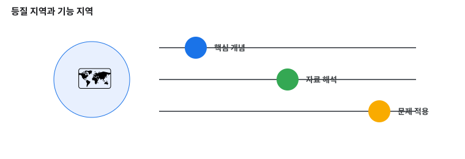
지역 조사 목적을 결정하고 목적에 적합한 조사 주제와 지역을 선정 / 조사 항목과 조사 방법 선정
실내 조사: 도서관·인터넷 → 지도, 문헌 자료, 통계 자료, 위성 사진·항공 사진 등 / 야외 조사 항목·방법·답사 경로·일자 등을 사전에 결정
야외 조사: 해당 지역 직접 방문 → 관찰, 실측, 촬영, 면담, 설문 등 (생략 가능)
수집한 지리 정보를 항목별로 구분, 중요 정보 선별·정리 → 그래프, 통계 지도, 표 등으로 표현 → 분석·종합
조사 방법, 분석한 자료, 결론 등을 체계적으로 기술 / 지역의 공간 변화 양상·문제점, 해결 방안을 모색
| 구분 | 영향 및 문제점 | 해결 방안 |
|---|---|---|
| 대도시 | 인구 과밀로 인한 시설 부족·노후화, 교통 체증·범죄 증가, 환경 오염 발생, 공동체 의식 약화 등 | 도시 내 기반 시설 확충 / 도시 재개발을 통한 환경 개선 / 지역 균형 발전을 통한 인구의 지방 분산 |
| 중소 도시 | 일자리·시설 부족에 따른 지역 경제 침체 / 대도시로의 인구 유출 | 일자리 창출 및 각종 서비스 질 개선을 통한 자족 기능 확충 |
| 도시와 인접한 촌락 |
일자리·시설 부족 → 지역 경제 침체 / 도시화 진행으로 전통적 가치관·문화 상실, 공동체 의식 약화 | 지역경제 활성화: 지리적 표시제 시행, 인터넷을 통한 농산물 직거래, 지역 축제 등 지역 특성화 사업 추진 / 공동체 문화 유지를 위한 지역 사회 노력 |
| 도시와 멀리 떨어진 촌락 |
노동력 부족, 성비 불균형, 유휴 경작지 증가, 교육·의료·문화 생활 여건 악화 → 인구 유출 가속화 | 교육·의료·문화 등 생활 기반 시설 확충으로 주민들의 삶의 질 향상 |
▲ 우리나라의 지리적 표시제
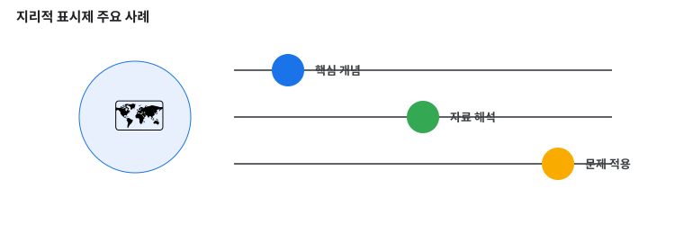